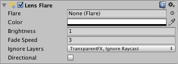

Lens Flare
Lens Flares simulate the effect of lights refracting inside camera lens. They are used to represent really bright lights or, more subtly, just to add a bit more atmosphere to your scene.

The easiest way to setup a Lens Flare is just to assign the Flare property of the Light. Unity contains a couple of pre-configured Flares in the Standard Assets package.
Otherwise, create an empty GameObject with GameObject->Create Empty from the menu bar and add the Lens Flare Component to it with Component->Effects->Lens Flare. Then choose the Flare in the Inspector.
To see the effect of Lens Flare in the Scene View, check the Effect drop-down in the Scene View toolbar and choose the Flares option.

Properties
| Property: | Function: |
|---|---|
| Flare | The Flare to render. The flare defines all aspects of the lens flare's appearance. |
| Color | Some flares can be colorized to better fit in with your scene's mood. |
| Brightness | How large and bright the Lens Flare is. |
| Fade Speed | How quickly or slowly the flare will fade. |
| Ignore Layers | Select masks for layers that shouldn't hide the flare. |
| Directional | If set, the flare will be oriented along positive Z axis of the game object. It will appear as if it was infinitely far away, and won't track object's position, only the direction of Z axis. |
Details
You can directly set flares as a property of a Light Component, or set them up separately as Lens Flare component. If you attach them to a light, they will automatically track the position and direction of the light. To get more precise control, use this Component.
A Camera has to have a Flare Layer Component attached to make Flares visible (this is true by default, so you don't have to do any set-up).
Hints
- Be discrete about your usage of Lens Flares.
- If you use a very bright Lens Flare, make sure its direction fits with your scene's primary light source.
- To design your own Flares, you need to create some Flare Assets. Start by duplicating some of the ones we provided in the the Lens Flares folder of the Standard Assets, then modify from that.
- Lens Flares are blocked by Colliders. A Collider in-between the Flare GameObject and the Camera will hide the Flare, even if the Collider does not have a Mesh Renderer. If the in-between Collider is marked as Trigger it will block the flare if and only if Physics.queriesHitTriggers is true.